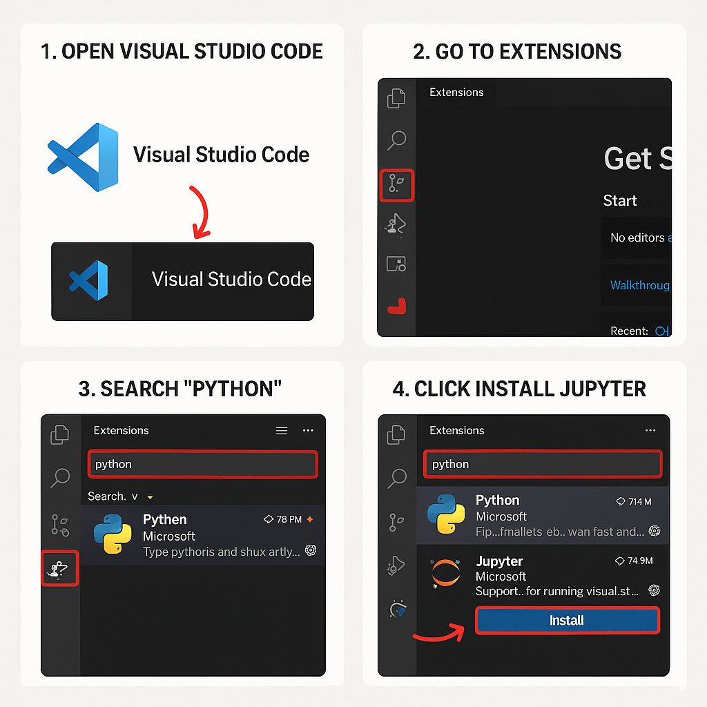

NU Quantum Competition Lab Setup Guide
Welcome! This page will guide you through setting up your programming environment for the Air Quality Quantum Computing course. Please follow each step in order.
1. Install Visual Studio Code
Visual Studio Code (VS Code) is a free, powerful code editor. You’ll use it for all your Python and Jupyter work.
Download VS Code- Download and install VS Code for your operating system.
-
Open VS Code:
- Windows: Click the Start menu, type Visual Studio Code, and press Enter.
- Linux/macOS: Find "Visual Studio Code" in your applications menu, or run
codein your terminal if added to PATH.
-
Install Extensions:
- Click the Extensions icon (🧩) on the left sidebar or press Ctrl+Shift+X (Cmd+Shift+X on Mac).
- Search for Python (by Microsoft) and click Install.
- Search for Jupyter (by Microsoft) and click Install.

2. Install Anaconda (or Miniconda)
You need Anaconda or Miniconda to manage Python environments and packages.
- Download the installer for your platform.
- Follow the installation instructions.
-
Windows: Tick “Add Anaconda to my PATH environment variable” during installation, or run
conda initafter. - Restart your terminal or Anaconda Prompt after installation.
Note: If you see "conda not found" errors later, try running from the Anaconda Prompt or restart your
terminal after running
conda init.
3. Download and Run the Environment Setup Script
Windows
⊞ Download Windows script- Download the Windows setup script from the link provided by your instructor.
- If needed, edit the script to add or change dependencies.
- Double-click the script to run it.
-
If you see "conda is not recognized" error:
- Open Anaconda Prompt (not regular Command Prompt).
- Navigate to the script folder and run:
create_env_windows.bat
Linux / macOS
🐧 Download Linux script- Download the Linux/macOS setup script from the link provided by your instructor.
- Open a terminal in the script’s folder.
- Make the script executable:
chmod +x create_env_linux.sh - Run the script:
./create_env_linux.sh - Follow any prompts to complete the setup.
Tip: If you get a “Permission denied” error, make sure you ran
chmod +x create_env_linux.sh
first.
Troubleshooting & Help
- Conda not found: Ensure Anaconda/Miniconda is installed and your terminal is restarted.
- Permission denied (Linux/macOS): Run
chmod +x create_env_linux.shbefore executing. - Still stuck? Contact the technical team!.